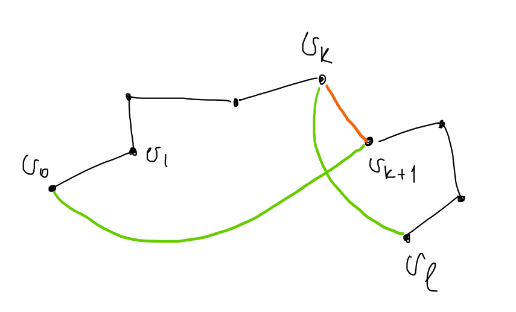

Определение: \(V^{(k)}\) – это множество всех \(k\)-элементных подмножеств множества \(V\).
Определение:
Граф – это тройка \(\{E, V, \sigma\}\), где
\(E\) – множество ребер (\(e \in E\) – ребро)
\(V\) – множество вершин (\(v \in V\) – вершина)
\(\sigma: \,\,\,\, E \to V^{(1)} \cup
V^{(2)}\) – отношение инцидентности ребер и
вершин.
Если \(\sigma(e) \in
V^{(1)}\), то \(e\) –
петля.
Если \(\sigma(e) \in
V^{(2)} = \{u, v\}\), то вершина \(u\) смежная (соседняя к)
вершине \(v\).
Если \(v \in \sigma(e)\), то вершина \(v\) инцидентна ребру \(e\).
Если \(\sigma(e) = \sigma(e’)\), то \(e\) и \(e’\) кратные ребра.
Определение: Граф
простой, если в нем нет петель и кратных ребер.
Часто записывается \(G = \{E, V\}\), вместо \(\{E, V, \sigma\}\).
Определение: Степень вершины \(v \in V\) графа \(G = \{E, V, \sigma\}\) – это сумма количества ребер инцидентных \(v\) и не являющихся петлями и удвоенного количества петель инцидентных \(v\).
Обозначается: \(\operatorname{deg}v\).
Утверждение: \[\displaystyle \sum_{v \in V}\operatorname{deg}v = 2|E|\]
Доказательство: \(\,\,\,\,\blacksquare\)
Определение:
Маршрут (между вершинами \(v_0\) и \(v_k\)) в графе \(G = \{E, V, \sigma\}\) – это
последовательность \(v_0, e_1, v_1, e_2, v_2,
\ldots, e_k, v_k\), где \(v_i \in V
\,\,\,\,\forall i \in \{0, \ldots, k\}, \,\,\,\, e_i \in E
\,\,\,\,\forall i \in \{1, \ldots, k\}\) и ребро \(e_i\) инцидентно вершинам \(v_{i - 1}\) и \(v_i\).
Если в маршруте \(\forall i \ne j \,\,\,\, e_i \ne e_j\), то
маршрут – это цепь.
Если в маршруте \(v_0 = v_k\), то маршрут
замкнутый.
Замкнутая цепь – это цикл.
Если в
маршруте \(\forall i \ne j \ne 0 \ne k
\,\,\,\, v_i \ne v_j\), то маршрут – это
путь.
Замкнутый путь – это простой цикл.
Определение: Граф \(G = \{E, V , \sigma\}\) связный, если \(\forall u, v \in V\) существует маршрут между \(u\) и \(v\).
Определение: Эйлеров обход графа (эйлеров цикл) – это цикл, содержащий все вершины графа.
Определение: Если в графе существует эйлеров цикл, то граф – эйлеров.
Теорема: Граф эйлеров \(\Leftrightarrow\) граф связный и степени всех вершин графа четны.
Доказательство: \[\Rightarrow\]
Граф эйлеров, значит существует цикл, содержащий все вершины графа. Идя по этому циклу, в каждую вершину нужно зайти и выйти, то есть степень любой вершины четна.
\[\Leftarrow\]
Степени всех вершин четны, граф конечный и связный. Начнем в какой-нибудь вершине и будем строить цикл, выбирая каждый раз следующей непосещенную вершину, так как граф конечный этот процесс завершится и будет получен искомый цикл \(\,\,\,\,\blacksquare\) (Плохо)
Определение: Гамильтонов цикл – это простой цикл, проходящий через все вершины графа.
Определение: Граф гамильтонов, если в нем есть гамильтонов цикл.
Утверждение: Пусть \(G = \{E, V, \sigma\}\) гамильтонов граф. Тогда
Доказательство:
То есть для определения гамильтоновости графа достаточно рассматривать простые графы.
Теорема: (Дирака) Пусть \(G = \{E, V, \sigma\}\) – простой граф, \(|V| = n, \,\,\,\, n \ge 3, \,\,\,\, \forall v \,\,\,\, \operatorname{deg}v \ge \frac{n}{2}\). Тогда \(G\) гамильтонов.
Доказательство:
Идея: Построить самый длинный путь в графе \(G\). Пусть его длина \(l\). Доказать, что можно получить цикл длины \(l + 1\). Предположить, что полученный цикл не гамильтонов. Прийти к противоречию. Всё! 
Пусть \(\gamma = v_0v_1\ldots v_{l-1}v_l\) самый длинный путь в графе. Докажем существование цикла длины \(l + 1\). Если \(v_0\) и \(v_l\) смежны, то таким циклом является последовательность \(v_0v_1\ldots v_{l-1}v_lv_0\). Иначе хотим найти вершину \(v_k \in \gamma\), такую чтобы следующая за ней в пути вершина была смежна с \(v_0\), а сама \(v_k\) была смежна с \(v_l\) (см. рисунок). Если доказать существование такой вершины, то искомым циклом будет \(v_0\ldots v_kv_l\ldots v_{k + 1}v_0\) (на рисунке черный путь + оранжевое ребро – это \(\gamma\), а черные ребра + зеленые – это искомый цикл).
Рассмотрим множества: \(X = \{v_i: \,\,\,\, v_iv_l \in E\}\) и \(Y = \{v_i: \,\,\,\, v_{i + 1}v_0 \in E\}\). Все вершины смежные с \(v_0\) принадлежат пути, потому что иначе можно было бы увелечить длину пути. \(|X| = \operatorname{deg}v_l \ge \frac{n}{2}, \,\,\,\, |Y| = \operatorname{deg}v_0 \ge \frac{n}{2} \Rightarrow |X| + |Y| \ge n\). Пусть \(X \cap Y = \varnothing\). Тогда \(|X \cup Y| = |X| + |Y| \ge n\), но вершина \(v_l \not \in X\) и \(v_l \not \in Y \Rightarrow\) в графе больше \(n\) вершин. Противоречие, а значит \(\exists v_k: \,\,\,\, v_k \in X \cap Y\).

Докажем, что полученный цикл \(C\) гамильтонов. Предположим обратное, тогда \(\exists v \in V: \,\,\,\, v \not\in \gamma\). Пусть \(v\) смежна с вершиной \(v_s\) из цикла \(C\). Тогда выбросив любое из смежных с \(v_s\) ребер, принадлежащих \(C\) получим путь длины \(l + 1\). Противоречие. Значит \(v\) не смежна ни с одной вершиной \(C\). Вершин смежных с \(v \ge \frac{n}{2}\). Вершин смежных с \(v_0 \ge \frac{n}{2}\) и все они принадлежат \(C\). Значит в графе больше, чем \(n\) вершин. Противоречие. Следовательно, \(C\) гамильтонов цикл \(\,\,\,\,\blacksquare\)
Определение: \(H = (V_H, E_H, \sigma_H)\) подграф графа \(G = (V_G, E_G, \sigma_G)\), если \(V_H \subset V_G, \,\,\,\, E_H \subset E_G, \,\,\,\, \sigma_H = \sigma_G |_{E_H}\).
Определение: Подграф остовный, если содержит все вершины исходного.
Определение: Пусть \(M \subset V, \,\,\,\, G = (V, E, \sigma)\). Обозначим \(G(M) = (M, E_M = \{\sigma^{-1}(M^{(1)} \cup M^{(2)}), \sigma |_{E_M}\})\).
Утверждение: Пусть \(M \subset V, \,\,\,\, G = (V, E, \sigma)\). Тогда \(G(M)\) – подграф \(G\).
Доказательство: очев \(\,\,\,\,\blacksquare\)
Определение: Пусть \(G = (V, E, \sigma), \,\,\,\, w \in W, \,\,\,\, v \in V\).
\(w \sim v\) (эквивалентно), если существует маршрут из \(w\) в \(v\).
Утверждение: Введенная выше “\(\sim\)” является отношением эквивалентности на множестве вершин графа.
Доказательство: \(\,\,\,\,\blacksquare\)
Определение: Класс эквивалентности вершины \(v\) графа \(G\) обозначается \([v]\).
Определение: Компонента связности вершины \(v\) графа \(G\) – это максимальный по включению подграф, содержащий \(v\).
Утверждение: \(G([v])\) – это компонента связности вершины \(v\).
Определение: Дерево – это связный граф без циклов.
Теорема: Пусть \(G = \{V, E\}\) – граф, \(|V| = n, \,\,\,\, |E| = m\). Следующие утверждения эквивалентны.
Доказательство:
\[1 \Rightarrow 2\] Докажем индукцией по количеству вершин. База: \(n = 1\) тогда ребер \(0\), так как нет петель, то есть \(n = 1 = 0 + 1\) что и требовалось. Пусть \(n \ge 2\) и для деревьев с меньшим, чем \(n\) числом вершин верно \(n = m + 1\). Тогда возьмем произвольное ребро \(e\)(множество ребер непусто, так как граф связный) и рассмотрим \(G\setminus e\).
Лемма: Пусть \(G\) — дерево, \(e\) – произвольное ребро в нем. Тогда граф \(G\) без ребра \(e\) содержит \(2\) компоненты связности, каждая из которых – дерево.
Доказательство: Пусть \(e\) соединяет \(v_1\) и \(v_2\). \(G\) – связный, значит, убрав одно ребро получим \(1\) или \(2\) компоненты связности. Если получим одну компоненту, то существует маршрут из \(v_1\) в \(v_2\). Следовательно, в \(G\) был цикл. Противоречие. Получили две компоненты связности, каждая из которых не содержит циклов, так как циклов нет в \(G \,\,\,\,\blacksquare\)
Для \(2\)-ух полученных компонент связности – деревьев верно предположение индукции. Пусть в первом и втором деревьях \(n_1, n_2, m_1, m_2\) вершин и ребер соответственно. Тогда \(n_1 = m_1 + 1, \,\,\,\, n_2 = m_2 + 1\). \(n = n_1 + n_2 = m_1 + 1 + m_2 + 1 = (m_1 + m_2 + 1) + 1 \,\,\,\,\blacksquare\) (в \(G\) \(m_1 + m_2 + 1\) – ребер)
\[2 \Rightarrow 3\]
Пусть \(G\) содержит цикл.
Лемма: Пусть простой граф \(G\) содержит \(n\) вершин, \(m\) ребер и \(k\) компонент связности. Тогда \(n - m \le k\).
Доказательство: Докажем индукцией по количеству ребер. Для \(m = 0 \,\,\,\, n = k\), что и требовалось. Пусть ребер \(m \ge 1\) и для всех графов с меньшим числом вершин утверждение выполнено. Тогда выберем произвольное ребро \(e\) и рассмотрим граф без него. Убрав ребро, получим либо \(k\) компонент связности либо \(k + 1\). Для графа \(G \\ e\) верно \(n’ - m’ \le k’\), \(m’, \,\,\,\, n’, \,\,\,\, k’\) – количество ребер, вершин и компонент связности \(G\setminus e \,\,\,\,\blacksquare\)
Рассмотри граф \(G\) без произвольного ребра \(e\), входящего в цикл. \(G\setminus e\) связный, так как \(e\) входило в цикл. То есть в \(G\) - \(n\) вершин и \(n - 2\) ребер, что противоречит лемме \(\,\,\,\,\blacksquare\)
\[3 \Rightarrow 4\] Единственность маршрута при его существовании очевидна. Маршрут существует между любыми двумя вершинами \(G\), так как, предположив, что в \(G\) - \(k\) компонент связности(которые не содержат циклов, а следовательно деревья) получим, что \(n =\) сумма количества вершин в каждой компоненте = сумма количества ребер в каждой компоненте + \(k\)(по \(1 \Rightarrow 2\)) \(= m + 1 \,\,\,\,\blacksquare\)
\[4 \Rightarrow 5\]
Если в \(G\) есть цикл, то нарушается условие о единственности маршрута. Добавив ребро, получим цикл, так как маршрут существует между любыми двумя вершинами. Если получим больше одного цикла, то они оба содержат добавленное ребро, а следовательно существует цикл в \(G \,\,\,\,\blacksquare\)
\[5 \Rightarrow 1\]
\(G\) – связный, так как для каждой пары вершин существует маршрут между ними \(\,\,\,\,\blacksquare\)